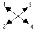
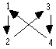

|
|
|
THEORY.
Life is a spiritual quality. It has four basic abilities:-
| 1. | It can bring things into existence. |
| 2. | It can take things out of existence. |
| 3. | It can know. |
| 4. | It can not-know. |
These actions are accomplished by postulates. A postulate is a causative consideration.
That which is brought into existence, taken out of existence, known or not-known is called an effect.
| 1. | The purpose of bringing an effect into existence is to make it known. |
| 2. | The purpose of taking an effect out of existence is to make it not-known. |
| 3. | The purpose of knowing is to know. |
| 4. | The purpose of not-knowing is to not know. |
Thus, 1 & 3 and 2 & 4 are complementary postulates. They enhance affinity.
Thus, 1 & 4 and 2 & 3 are conflicting postulates. They lower affinity.
Conflicting postulates are called a game. The purpose of a game is to have fun. All conflicting postulates are essentially a game, though it may be called other things. Due to contagion with opposing postulates all games tend to reduce the ability of the being to postulate. The power of a being is his ability to make his postulates effective.
A game is won when the loser becomes convinced of the opponents postulates. Thus, all games are essentially contests in conviction, and all failure is basically postulate failure. (Those things which have been variously called engrams, traumas, etc. will be found upon examination only to consist of postulate failure.) Postulate failure is known as an overwhelm. Overwhelming the postulate of an opponent in a game is know as an overt act. Having one’s own postulates overwhelmed is called a motivator.
The difference between win/lose and overt/motivator is a very fine one, and is determined solely by the considered value of the game. If the game is relatively trivial, then win/lose is applied; if the game is serious ( important ) then overt/motivator is applied.
In that the winning of a game brings about the end of the game - and thus the loss of the game itself - winning and losing are junior considerations to the actual playing of the game. Thus the playing of the game is senior to the consideration of win/lose. It is a rule of all games, that intentionally lowering one’s ability in order to be more evenly matched with the opponent leads inevitably to the state of an enforced loss of the game.
Thus, the paradox of all games:
| a. | All games are played for fun |
| b. | To always win is no fun. |
| c. | To invite a loss is to eventually have a loss enforced upon one. |
Thus, eventual failure is the end result of all games.
This is the dwindling spiral of ability of the being in the universe. ( After the loss of a game considered serious, the loser’s only recourse is to blame the victor for overwhelming him. Thus, blame is the assignment of responsibility for the outcome of a game, with an implied wrongness. If the victor accepts this blame - it too is a postulate overwhelm - he feels guilt. Thus, blame and guilt are seen as two sides of the same coin: where one is present you will always find the other. They are a pair, and are quite inseparable. )
Games are played in space and need time for their completion. In the absence of games, space and time cease to exist. Thus, conflicting postulates perpetuate space and time, while complementary postulates vanish it. A game, to be worth playing, must contain elements considered valuable. Value is monitored by the consideration of beauty, and is increased by scarcity. But as both the effect and the consideration of value or beauty are generated by life, then life has a senior value to all things. ( Civilizations invariably decline when this truth is lost. )
Complementary postulates enhance life; conflicting postulates detract from it. Thus, games, although considered fun, have the liability of lessening the "amount" of life the being possesses.
Games, by their very nature, can become compulsive, and result in a lessening of life - to such a degree that the true nature of life, postulates and games themselves become unknown to the being. This state of affairs is only resolved, in the final instance, by the application of complementary postulates. Thus complementary postulates, when applied, have the ability to dissolve all games.
The four basic actions of life each have a twin postulate structure:
| 1. | The postulate bringing the effect into existence, and the postulate that it shall be known. |
| 2. | The postulate taking the effect out of existence, and the postulate that it shall be made not-known. |
| 3. | The postulate to know the effect and the postulate that it shall be made known. |
| 4. | The postulate to not-know the effect and the postulate that it shall be made not-known. |
Thus, in each of the basic actions, each postulate complements and enhances its’ twin. Thus, the postulate structure
between beings is:
| SELF | OTHERS |
| 1. Make known. 2. Make not-known 3. Know. 4. Not-know. |
Know. Not-know. Make known. Make not-known. |
The "self" postulate is at one’s own end of the comm line, and is called the self-determined postulate ( SD ); the "other’s" postulate is the one you put at the other end of the comm line, and is called the pan-determined postulate ( PD ). Thus, when two beings, at different ends of a comm line, adopt (1) and (3) or (2) and (4) respectively, both their self-determined and pan-determined postulates match perfectly, and understanding occurs. However, when they adopt (1) & (4) or (2) & (3) respectively, there is conflict between their SD & PD postulates and understanding is correspondingly reduced.
It is a law of all games that overwhelming failure causes the being to compulsively adopt the pan-determined postulate of his opponent. This is the postulate enforced upon him at his end of the comm line. A game, then, can be regarded as a conflict of postulates wherein a being endeavors to convince his opponent of his own ( PD ) postulate, while resisting the ( PD ) postulate arrayed against him. All games, despite their seeming complexity, can be reduced to this basic simplicity and thus understood.
All games contain conviction. Conviction, by definition, is an enforcement of knowingness. Enforcement of knowingness is called importance. Importance is the basis of all significance. Essentially, importance is a "must".
In games of play our four basic abilities become:
| SD | PD |
| 1. Must be known. 2. Must not be known. 3. Must know. 4. Must not know. |
Must know. Must not know. Must be known. Must not be known. |
That which is considered important tends to persist and to become more solid. Solidity and persistence - need for - are thus the basic conviction phenomena in games. Things are made more solid and more persistent to convince others of their existence. The mechanism is entirely reversible: that which is persisting and solid is tended to be regarded as important.
Any importance is relative to, and can be evaluated against, any other importance. There is no absolute importance. Thus, what the being considers important is relative to the being and the games he is playing.
Thus, any field of knowledge which postulates an absolute importance is at variance with natural law. ( The search for deeper significance into life or the mind is only the search for prior or greater importance. In that all importance is relative to all other importance it is both a fruitless and endless search. Various past researchers in this field have claimed to have discovered basic importances of a more or less absolute nature ( ‘sex’, ‘survival’, etc. ) and then proceeded to develop a therapy based upon their discovery. We can now see clearly why they failed. The "button" is importance. Having now found it we can stop looking for it. )
The amount of conviction required to convince a being of the existence of a postulate is relative to the being and the games he is playing. A games rule is an agreement between beings denoting permissible play. However, games rules, being postulates themselves, and being junior to the games postulates, also become subject to games play.
Thus, Law, Justice, etc. become themselves a games condition, and are subject to, and junior to the basic laws of games. Thus, any games rule, once introduced, immediately becomes subject to a games condition in its’ own right. Thus, the only immutable laws are the four basic abilities of life itself. All else tends to be of a transient nature.
Collecting and numbering our four basic SD postulates we get:
| 1. Must be known. 2. Must not be known. |
3. Must know. 4. Must not know. |
The basic games are: 
These four numbers we shall call the legs of the basic game. The oppositions are shown by the arrows.
In that it is not possible to play a game with an effect until it has been brought into existence, all games with an effect start at (1); due to progressive postulate failure the being progresses round the legs of the basic game in the following manner:
The being at (1) is in opposition to (4), whom he is endeavoring to convince that the effect should be known; (4) on the other hand, is doing a ‘Mustn’t Know’ on the effect, and his PD postulate is ‘Mustn’t be Known’. If (1) fails he will adopt the PD postulate of (4), and will move from leg (1) to leg (2) regarding the effect. He has now left the old game, and is confronted with a new opponent, (3), who is endeavoring to know the effect. Failure in this new game will result in (2) being forced to adopt the PD postulate of (3), which is ‘Must be Known’. However, he can no longer adopt this postulate regarding the effect, for it is already in failure from the earlier game, so he now leaves (2) and adopts the valence of (3) and maintains the postulate ‘Must Know’ regarding the effect. He is now in opposition to his own old identity, (2), and carries the SD postulate of ‘Must Know’, with the PD postulate of ‘Must be Known’. Further failure causes the being to adopt the PD postulate of (2), ‘Mustn’t Know’, and so sink into leg (4) with an SD postulate of ‘Must not Know’. In this new and final game with the effect he is opposed by (1), ‘Must be Known’, regarding the effect. Failure in this game will force him to adopt the postulate ‘Must Know’. However, he cannot adopt this postulate regarding the effect as it is already in failure. So he goes into the valence of (1) and henceforth operates with a substitute effect. This is forced, for an examination of the situation will now show that all four postulates, both as SD and PD, are now in failure, so no further game with the original effect is any longer playable.
This cycle is known as the Postulate Failure Cycle regarding an effect. The route around the legs is:

The four legs constitute the four legs of the goal ‘To Know’. All other goals likewise have four legs, but an examination of them will reveal that without exception they are all methods of making known, making not-known, knowing, or not-knowing. Thus, they are junior to the goal ‘To Know’ and we need not consider them.
The past of the being, then, will be found to consist of the various vicissitudes he has encountered on the legs of the goal ‘To Know’ regarding a succession of effects and substitute effects. If desired, this route can be traced back through time.
POSTULATE FAILURE CYCLE CHART
REGARDING AN EFFECT
SELF |
OTHERS |
||||||
| ORIGIN | RECEIPT | ORIGIN | RECEIPT | ||||
| 1A | - | Must Know | Must Be Known | - | Motivator | Overwhelm | Forced to Know |
| 1B | - | Mustn’t Know | Must Be Known | - | Game | Game | Game |
| 2A | Mustn’t Know | - | - | Must Be Known | Game | Game | Game |
| 2B | Mustn’t Know | - | - | Mustn’t be Known | Overt | Overwhelm | Preventing from being Known |
| 3A | - | Mustn’t Know | Mustn’t be Known | - | Motivator | Overwhelm | Prevented from Knowing |
| 3B | - | Must Know | Mustn’t be Known | - | Game | Game | Game |
| 4A | Must Know | - | - | Mustn’t be Known | Game | Game | Game |
| 4B | Must Know | - | - | Must Be Known | Overt | Overwhelm | Forcing to be Known |
| 5A | - | Must Be Known | Must Know | - | Motivator | Overwhelmed | Forced to be Known |
| 5B | - | Mustn’t be Known | Must Know | - | Game | Game | Game |
| 6A | Mustn’t be Known | - | - | Must Know | Game | Game | Game |
| 6B | Mustn’t be Known | - | - | Mustn’t Know | Overt | Overwhelm | Preventing from Knowing |
| 7A | - | Mustn’t be Known | Mustn’t Know | - | Motivator | Overwhelm | Prevented from being Known |
| 7B | - | Must Be Known | Mustn’t Know | - | Game | Game | Game |
| 8A | Must Be Known | - | - | Mustn’t Know | Game | Game | Game |
| 8B | Must Be Known | - | - | Must Know | Overt | Overwhelm | Forcing to Know |
Note: The Time Track runs from 8 to 1. You work from 1 to 8, around and around.
There is a valence shift on the Track between 1 and a new substitute effect entered at 8B.
Also a valence shift occurs between 5A and 4B.
It is to be noted that valence shifts are always diagonally across the goals package. The valence the being goes into is called the winning valence; the valence he comes out of is called the losing valence. Thus, legs 1 and 3 are winning valences, and legs 2 and 4 are losing valences. Shifts from legs 1 to 2, or 3 to 4, are not valence shifts, they are merely the super-imposition of a Mustn’t postulate over an existing Must postulate, now in failure. All valence shifts involve the adoption of a new identity, whether real or imagined.
The repository of these experiences on the goal ‘To Know’ regarding a succession of effects and substitute effects we call the mind. Basically, then, the mind is best considered as a collection of past importance. Due to their intrinsic nature, past importances have a command power over the being in the present. However, as these various past importances are contacted and re-evaluated to present time realities the mind will be found to become progressively less persisting and less and less solid, and will finally vanish. Nevertheless, the being can, at any time, by re-injecting sufficient fresh importance into any part of it, cause it to reappear in any desired solidity. Needless to say, when this stage is reached the mind will no longer have a command power over the being, and his full abilities will be restored. The command power of the mind over the being is only the command power of the postulates it contains. Once these have been contacted and re-evaluated to present time realities the mind, as an entity, will be found to vanish. As the mind contains no postulates that have not been put there by the being during the playing of various games through time, it is of no value to him, and unless required for reference or aesthetic purposes is best kept in a state of vanishment.
The being enters games at a desire level; they later become an enforcement, and then an inhibition. Thus, the being will be found to be in a games condition regarding his past games. As the repository of these old games is called the mind, the being will be found to he in a games condition with his own mind. As the mind only contains his own past postulates, he cannot possibly ever win the game against his own mind. It is the one game he can only lose. Extreme examples of failure in this game we call insanity. What is called the enigma of the mind is the result of the compulsive games condition that the being is in regarding it. The attitude of the being towards his mind, or any part of it, can only be one or other of the legs of the goal ‘To Know’. Thus, the mind exhibits the following phenomena:
Any attempt to create an effect upon it (Must be known) will cause it to resist the effect (Mustn’t know). The greater the attempt to create an effect upon it the more resistive it becomes.
Any attempt to withdraw from it (Mustn’t be known) will cause the mind to seemingly pursue the being (Must know). Hence, the well known feeling of being ‘stuck with’ ones own mind.
Any attempt to know the mind (Must know) will cause the mind to seemingly adopt a ‘Mustn’t be known’ and become progressively more elusive.
Any attempt to resist the mind (Mustn’t know) will cause the mind to immediately enforce itself upon the being (Must be known) and overwhelm him.
It is only this compulsive games condition that a being gets into regarding his own mind, and an ignorance of its true nature, that has defeated past researchers in this field. It has the well deserved reputation of being the most difficult subject of all to discover anything about. This compulsive games condition between the being and his own mind also accounts for the wide-spread apathy we encounter when the subject of doing something about the mind is mentioned, for most beings have long since fought themselves to a standstill on this subject; they have become resigned to what they consider the inevitable. Thus, it can be clearly seen that the mind can never be resolved by going into a games condition with it, for whichever role the being adopts his mind will invariably overwhelm him.
The key to the resolution of the mind, then, lies in exercising the being in the discovery and creation of complementary postulates; and, transiently, in unraveling the tangled mass of conflicting postulates that his mind has become. The mind, being a repository of old games, which are postulates in conflict, has no defense against the application and re-injection of complementary postulates regarding the effects it contains. In short, we vanish the mind by progressively getting the being to create, and do exercises in, complementary and conflicting postulates; to create and experience overt and motivator overwhelms, play games, and generally bring back under his own determinism these four basic postulates - both as SD and PD - which go to make up the interchange we call life. Enroute he will discover, or re-discover, all there is to know about life; he will also discover his true nature as a spiritual being.
Knowing the anatomy of games and the Postulate Failure Cycle, it is now possible to list all conceivable classes of overts and motivators regarding an effect. Its also possible to list them in the order in which they were accumulated through time. Each leg of the goal ‘To Know’ has its own overt and motivator, giving us a total of 8 classes in all.
| Leg 1. | 1) Forcing to know. (overt). 2) Prevented from being known, (Motivator). |
| Leg 2. | 3) Preventing from knowing. (overt 4) Forced to be known. (motivator). |
| Leg 3. | 5) Forcing to be known. (overt). 6) Prevented from knowing. (motivator). |
| Leg 4. | 7) Preventing from being known. (overt). 8) Forced to know. (motivator). |
If one wished to address these regarding a specific effect on a being one would, of course, work backwards from 8 to 1, as the most recent experiences tend to occlude the earlier ones. Thus, to remove the command power of any effect from the mind it is only necessary to discharge these various overts and motivators where they appear on the time track. As can be seen, there are only four classes of overwhelm, and each has a common name in our language:
| Forcing to know Preventing from being known Preventing from knowing Forcing to be known |
Infliction Rejection Deprivation Revelation |
Infliction/Rejection and Deprivation/Revelation each form a pair, and are associated with one or other of the two basic games. Viz:
Leg 1 commits the overt of Infliction, and suffers the motivator of rejection. Leg 2) commits the overt of Deprivation, and suffers the motivator of Revelation. Leg 3) commits the overt of Revelation, and suffers the motivator of Deprivation. Leg 4) commits the overt of Rejection, and suffers the motivator of Infliction.
( Important note. It must be realized that these 4 words are only substitutes for the exact postulates as given in the Postulate Failure Cycle chart, and should only be used with that in mind. Thus, they may prove useful early on, but later the exact postulates as given on the chart must be used if you ever wish to take the mind apart cleanly. )
People do tend - repeat tend - to become more or less fixed in one or other of the legs of the basic game, and take on the personality characteristics of the postulate they are dramatizing. Viz:
Must be known. Outflowing. Extrovert. Persuasive. Creative. Often prone to jealousy. Overts by infliction, and very upset by rejection. He got into this leg by being overwhelmed by a Must Be Known, whose valence he now occupies.
Mustn’t be known. Restrained outflow. Retiring. Devious. Secretive. Obsessed by ‘privacy’. Tends to collect mass and wealth by the simple expedient of not being able to outflow it. Overts by deprivation, and very worried by the thought of their secret wheeler-dealings being revealed. He got into this leg by being overwhelmed by a Mustn’t know while being in the Must be known leg; he now dramatizes the Mustn’t be known PD postulate of his overwhelmer.
Must know. Inflow. Nosey. Curious. Inclined to he highly sensual. Demands open comm lines. Hates secrets, and loves exposing them. Good solver of puzzles. Overts by revelation, and just hates being deprived of things. He got into this leg by being overwhelmed by a Must know, whose valence he now occupies.
Mustn’t know. Restrained inflow. Rejection. Compulsively makes nothing out of things. Destructive. Overts by rejection, and dreads having anything inflicted upon him. Contrary to popular opinion he did not get this way by having things forced upon him. He got into this leg by being overwhelmed by a Mustn’t be known while being in the Must know leg; he now dramatizes the Mustn’t know PD postulate of his overwhelmer. He’s been overwhelmed by deprivation.
Most people are a composite of the above types, but you will come across an almost ‘pure’ type occasionally. Generally speaking, the more inflexible the personality, the more it will tend towards a ‘pure’ type. It can also be seen that the class of motivators the being complains of not only tells you the type of overts he compulsively commits, the leg of the basic game he is dramatizing, but also just how he got into that leg. Thus, the data is of inestimable value when dealing with the mind.
The entire secret of making any mental mass vanish is to re-evaluate its importance to present time realities to the point where it is considered so trivial that there is no longer any need to keep it in existence; at which moment the mass can be easily not-known and will promptly vanish. While the mass is considered important it will continue in existence, and the being will continue to know it - even though trying desperately to not-know it. To try and vanish by means of force a mass while still holding the consideration that it is important is thus the height of stupidity, and can only lead to frustration and failure. Thus we see that the re-evaluation of past importances is the only step required to achieve the vanishment of any mental mass. As a successful psychotherapy can be defined as a system that brings about the vanishment of unwanted mental conditions, we see that this data is vital to our goal.
The ability to assign and unassign importances, while native to the being, will be found to require some attention on the route out.
The assignment of the consideration of unimportance to a mental mass after having considered the mass important is merely an attempt to devalue it (Mustn’t know), and is just another method of attempting to vanish it by means of force. Hence, we have no need to consider the subject of unimportance. Once one grasps that the need to regard a thing as unimportant is an importance in its own right, one has entirely got the flavor of all this. The ‘button’ is importance; the unimportance comes out in the wash.
The being, in his progressively more and more violent games condition with his own mind has endeavored to devalue it in the hope that it will go away and leave him alone. The cycle has been:
Mind considered as a series of past scenes.
Mind considered as pictures of past scenes.
Mind considered as memories, having no objection existence.
Mind considered as configurations in the brain.
The truth is that we have a being who can look at scenes. He can look at ‘now’ scenes, and he can look at ‘then’ scenes. The only difference is that ‘then’ scenes are scenes of ‘then’ and ‘now’ scenes are scenes of ‘now’. If ‘then’ seems less real than ‘now’, it is only because the being has made it so. A being can only communicate across a distance. He cannot communicate through time. So when he is looking at a ‘then’ he is looking at it now. Whatever he looks at, he looks at now.
A being can view ‘now’ from any viewpoint. A being can view ‘then’ from any viewpoint. Thus, every moment in time is a complete universe which is viewable to the being. (Viewpoint here is used in the sense of a ‘position from which to view’, and not in the sense of holding a mental opinion.) Thus, a being is natively capable of viewing every particle that has ever been brought into existence in this, or any other universe, from any viewpoint he so desire. He is also natively capable of taking any of these particle back out of existence again if he so desires. Whether or not he can get agreement from others on this latter step is merely a matter of how convincing he is to others, and is not a pre-requisite to the accomplishment of the feat. That others may choose to keep these particles in existence, still is, in the final instance, entirely their concern. Thus, you can walk out of the trap without the need to take everyone else with you. Believing differently is not to grant others the right to their own convictions - a trap all of its own.
Any changes you bring about, whether changes in ‘then’ or changes in ‘now’ you bring about now. So any changes yoummake to ‘then’, later than when the event occured, wil not ipso-facto produce changes in ‘now’. Thus, what is called the time paradox is exposed for the lie that it is.
If this concept seems difficult to grasp, it is only because on has become used to the idea of moving through time. This is an illusion brought about be entrapment in mass which is enduring through time. Only the particles, the effects, are created, made to endure, and are finally destroyed. The spiritual being, the creator of all these postulates, is utterly timeless. Once one fully grasps this, it is easy to see that changing the past does not ipso-facto produce a change in the present.
The Law of Duality. This states that the assignment of importance to a thing, or class of things, automatically assigns importance to the opposite or absence of those things. Thus, if life is considered important, then death - the absence of life - has also been granted importance. If the concept of ‘self’ is considered important, then the concept of ‘not-self’ is thereby also granted importance. From this law we see the proliferation and self-perpetuating nature of games.
The evaluation of things, one against the other, is achieved by the noting of differences and similarities between them. The ease of evaluation is inversely proportional to the considered spatial and/or temporal separation of the things being compared. Thus, evaluation is easiest when the two things are placed side by side in the same moment of time. The limit is reached when the two things are viewed simultaneously, for then no time elapses while the attention shifts from one to the other.
Thus, a ‘then’ importance and a ‘now’ importance are best evaluated when viewed simultaneously in the same moment of time - now.
The general action of simultaneously viewing a ‘then’ and a ‘now’ scene is called Timebreaking. The name derives from the fact that the action of Timebreaking breaks the temporal separation of ‘then’ and ‘now’, and thus removes the command power of the past scene so Timebroken.
That which has been Timebroken no longer has a command power over the being. The ability to Timebreak is native to the being, but due to the compulsive games condition the being is in regarding his past the ability has been to a greater or lesser degree lost, and for many will have to be learned again almost from scratch. There are exercises to improve the ability.
Timebreaking is the basis of all psychotherapy. When the patient tells his therapist of some past happening he is Timebreaking the happening, for the therapist and the incident are thus brought into the same moment in time - now.
However, a being can learn to Timebreak solo, and thus dispense with the need for a separate therapist. The mechanism is in no way dependent upon the presence of another person. As he becomes more and more proficient in the skill the being soon reaches a stage where the presence of a separate therapist is not only unnecessary, but is actually slowing down the patient’s progress; he can Timebreak much, much faster than any separate therapist could conceivably follow, and the continual need to keep reporting progress to the therapist becomes increasingly inhibitive of gains.
Mankind has always known that telling his troubles to another was helpful, but has attributed it to some quality in the other person, or to the fact that he is talking to him. But this is not so. The benefit was always derived from the mechanics of Timebreaking: the simultaneous communication with ‘then’ and ‘now’. Now the true facts are known, a separate therapist is only required until such time as the patient is confident that they can do the job alone. From the viewpoint of the therapist its a matter of helping another until such time as they are capable of helping themselves, and all assistance should be given with this view in mind. Any other approach, although undoubtedly good for business, is just not in the best interest of the patient.
The mind is like an itch. Although early on the being might require a separate therapist to scratch it for him, he must be encouraged to do his own scratching, or he’ll be needing a therapist to scratch his itch forever. Dependence upon the therapist must never be permitted to build up, and at all times the patient should be encouraged to stand on his own feet. Its his mind. He created it; he is maintaining it, and in the final instance only he can vanish it.
The intensity of the compulsive games condition between a being and his past is the sole factor that determines whether he can walk out of the trap unaided, or will, in the early stages, require assistance from a separate therapist. There is, in fact, a test which readily determines whether a being can go solo from the word go, or will need assistance early on from a separate therapist.
Due to the nature of the compulsive games conditions between a being and his past, the more he is willing to Timebreak it the less he has to Timebreak. Very soon he is left with nothing to Timebreak, and has to actively stimulate the past if he wishes to continue the exercise. He soon goes from the cringing victim, afraid to ‘tamper’ with his mind, to the triumphant victor pursuing the remnants wherever he can find them.
Life is undoubtedly the most abundant phenomena on the surface of this planet, as it is in the entire universe. Only the most superficial glance through a microscope at a drop of pond water, coupled with the realization that every cell in the body is alive in its own right, is sufficient to convince all but the invincibly ignorant of the fact. A life form is an aggregation of cellular life organized and directed by ‘higher’ life in a hierarchy that leads up to the being who answers up when his name is called. He is the one who does the exercises.
The human body is thus a life form and a complex cellular structure. It is also a mammal, and a member of what is called the higher ape family. A knowledge of the eating, mating cultural and social habits of this ape are invaluable to any being who wishes to walk this route. Know this ape whose body you currently consider yourself a part of, for such knowledge will bear you in good stead. Many a person has spent half their lives at war with one or other of this ape’s inherited social or cultural habits, and have at last gone to their graves defeated in the struggle. When you try and fight this ape’s evolutionary history you always lose. He has certain basic requirements, and a number of quaint behavior patterns. Learn to live with them, for you will not change him by fighting them; you’ll only make him ill and yourself miserable. Ignorance of the true nature of the human ape as a life form has caused untold misery down the ages. If you walk this route far enough you will one day walk away and leave this ape, but you will never be free of him until you understand him intimately.
|
|
|